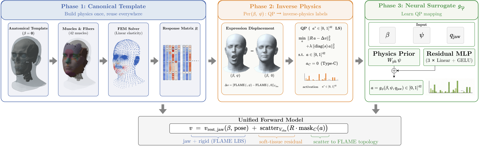

Parametric 3D face models such as FLAME have become a common interface for monocular face regression, performance capture, facial animation, and avatar systems. While compact and widely adopted, these models describe how the facial surface deforms but not which anatomical structures explain that deformation: a captured smile carries no information about whether it is best explained by Zygomaticus Major or Risorius, or whether its activation pattern is bilaterally symmetric in muscle space. We introduce MyoFLAME, a drop-in biomechanical companion to FLAME that adds an anatomical interpretation layer to any FLAME-fitted face while preserving the FLAME interface end-to-end. Given any FLAME (β, ψ, pose) input, MyoFLAME produces a coordinated three-layer anatomical output: 42 named muscle activation coordinates, the supporting skull mesh, and the matching skin surface, aligned with FLAME's own output. These coordinates are defined by a constrained inverse-physics projection of FLAME-derived surface displacement onto a jaw-conditioned hybrid muscle-response basis rather than by in vivo measurements of physiological muscle effort. Our approach combines a hybrid physical response basis (linear-elastic finite-element responses for bone-to-skin muscles with analytic ring-contraction responses for sphincters, constructed once from a canonical template and precomputed across a calibrated jaw grid) with closed-form linear maps from FLAME identity coefficients to per-subject skull and muscle-attachment geometry, eliminating the need for a learned identity-to-anatomy module. Per-sample inverse-physics optimization is then amortized into a compact residual surrogate, delivering activation-coordinate inference at interactive rates.
Drive the released MyoFLAME model with its muscles, live in your browser. Each slider is one named muscle; the digastric opens the jaw and the masseter and temporalis close it. Lower the skin opacity to see the muscle layer and the skull underneath. Drag to rotate, scroll to zoom.

Phase 1, canonical template. On the FLAME mean identity we build a skull, the facial muscles and a physical response basis once, precomputed across a calibrated grid of jaw poses. Phase 2, inverse physics. For each identity and expression, a bounded quadratic program explains the FLAME skin displacement with non-negative muscle activations. Phase 3, neural surrogate. A compact network amortizes this program, mapping FLAME (β, ψ, jaw) to muscle activations at interactive rates. Unified forward model. The skin is FLAME's own jaw and rigid motion plus the soft-tissue response of the activated muscles, scattered back to FLAME's topology, so every FLAME tool keeps working on the result.
@inproceedings{Shen2026MyoFLAME,
title = {MyoFLAME: Inverse-Physics Muscle Activation for Statistical 3D Face Models},
author = {Shen, Yixuan and Ji, Yuyang and Wang, Ren and Xu, Kaidi and Liu, Feng},
booktitle = {SIGGRAPH Asia 2026 Conference Papers},
year = {2026}
}